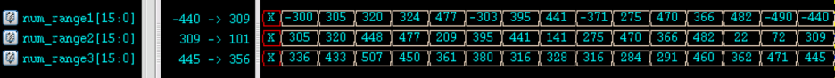
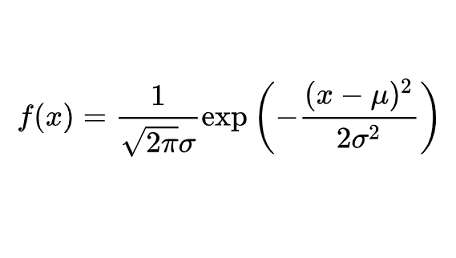
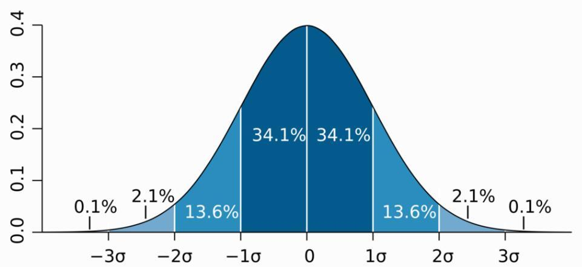
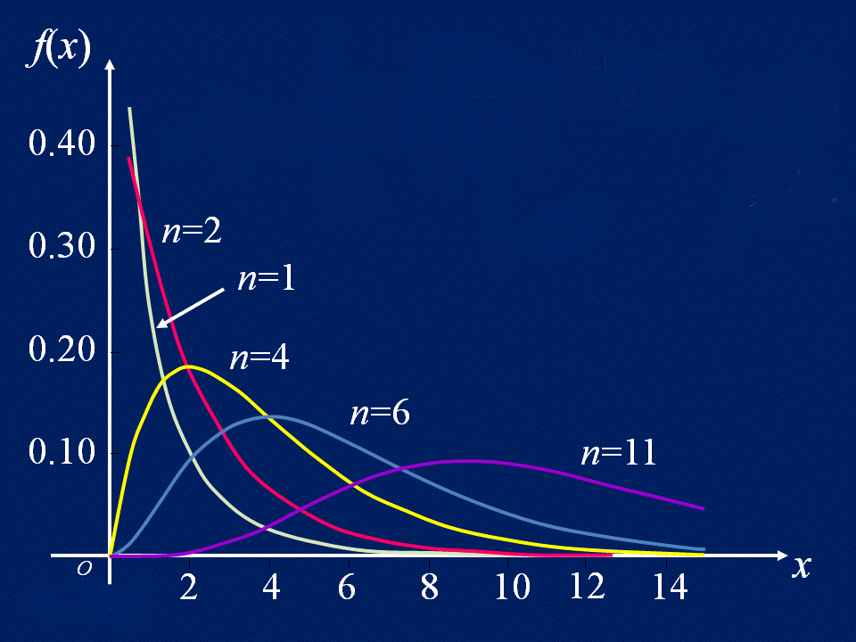

乱数
Verilogではシステムタスク $random(seed) を使用して乱数を生成します。seed は乱数のシードです。
seed の値が異なると、生成される乱数も異なります。seed が同じであれば、生成される乱数も同じです。
seed に初期値を設定することも、seed オプションを省略することもできます。seed のデフォルト初期値は 0 です。
seed オプションを使用しない場合と、seed を指定して変更しながら $random を呼び出す場合のコードは次のとおりです。
例
integer seed ;
initial begin
seed = 2 ;
#30 ;
seed = 10 ;
end
//no seed
reg [15:0] randnum_noseed ;
always@(posedge clk) begin
randnum_noseed <= $random(); //乱数シードを指定しない
end
//with seed
reg [15:0] randnum_wtseed ;
always@(posedge clk) begin
randnum_wtseed <= $random(seed); //乱数シードを指定
end
シミュレーション波形図は次のとおりです。

初期値を与えるかどうかに関わらず、乱数を1回生成するたびに seed の値が変わり、乱数もそれに伴って変わります。
seed の値を変更するたびに、現在出力される乱数値は変わります。しかし、次の状態では、乱数の並びはシステム内部で生成されるランダムシーケンスに戻ります。
例えば、シミュレーション図の t1 と t2 の時点では乱数シードが異なり、生成される乱数も異なります。しかし、他のクロック周期では、生成される乱数はすべて同じです。
システムタスク $random を呼び出すときは、seed オプションを指定しないか、seed オプションを指定する場合は変数を使用してパラメータを渡すことを推奨します。
$random を呼び出すときに、定数を seed パラメータに直接記述することは推奨されません。この場合、seed の値が固定されるため、乱数が1つしか生成されない可能性があります。例えば、以下の書き方は推奨されません。
randnum_wtseed <= $random(2); //不建议将常数项指定给 seed
剰余演算を使用して、乱数を一定のデータ範囲に制限することができます。例：
例
parameter MAX_NUM = 512;
parameter MIN_NUM = 256;
reg [15:0] num_range1, num_range2, num_range3 ;
always@(posedge clk) begin
//生成される乱数の範囲は -511 ~ 511, ±（MAX_NUM-1）
num_range1 <= $random() % MAX_NUM;
//生成される乱数の範囲は 0 ~ 511, （0 ~ MAX_NUM-1）
num_range2 <= {$random()} % MAX_NUM;
//生成される乱数の範囲は MIN_NUM ~ MAX_NUM（境界を含む）
num_range3 <= MIN_NUM + {$random()} % (MAX_NUM-MIN_NUM+1);
end
乱数は符号付き10進数形式で表示され、最初のいくつかのデータ結果は次のとおりです。

確率分布
Verilog は、一定の確率分布に従ってデータを生成する多くのシステムタスクを提供しています。簡単に説明すると以下のとおりです。
| システムタスク | 呼び出し形式 | タスクの説明 |
|---|---|---|
| 一様分布 | $dist_uniform(seed, start, end); | start、end はデータの開始、終了 |
| 正規分布 | $dist_normal (seed, mean, std_dev); | mean は期待値、std_dev は標準偏差 |
| ポアソン分布 | $dist_poisson(seed, mean); | mean は期待値（標準偏差に等しい） |
| 指数分布 | $dist_exponential(seed , mean); | mean は単位時間あたりに事象が発生する回数 |
| カイ二乗分布 | $dist_chi_square(seed, free_deg); | free_deg は自由度 |
| t分布 | $dist_t(seed, free_deg); | free_deg は自由度 |
| アーラン分布 | $dist_erlang(seed, k_stage, mean); | k_stage は次数、mean は期待値 |
一様分布（Uniform Distribution）
一様分布では、同じ長さの区間上での値の確率は同じです。
確率密度関数と確率分布図は次のとおりです。


実は、システムタスク $random が実装しているのは一様分布です。
$dist_uniform を呼び出して（256,512）区間で一様分布データを生成するコードは次のとおりです。
例
reg [15:0] data_uniform;
always@(posedge clk) begin //MIN_NUM ~ MAX_NUM で乱数を生成
data_uniform <= $dist_uniform(seed_dis, MIN_NUM, MAX_NUM);
end
正規分布（Normal Distribution）
正規分布の期待値は μ、標準偏差は σ であり、次のように表記される。N (μ, σ²)。
期待値が 0、標準偏差が 1 の正規分布を標準正規分布と呼びます。
正規分布の曲線は釣鐘型で、両端が低く、中央が高く、左右対称です。
正規分布の確率密度関数と分布図は次のとおりです。


$dist_normal を呼び出して、期待値 0、標準偏差 1 の標準正規分布データを生成するコードは次のとおりです。
例
reg [15:0] data_normal;
always@(posedge clk) begin //期待値0、標準偏差1の標準正規分布
data_normal <= $dist_normal(seed_dis, 0, 1);
end
ポアソン分布（Poisson Distribution）
ポアソン分布は、ある時間または空間の範囲内で、ある事象が X 回発生する確率を表すために使用されます。
ポアソン分布の期待値と標準偏差は同じで、ともに λ です。その確率密度関数と分布図は次のとおりです。


$dist_poisson を呼び出して、期待値 4 のポアソン分布データを生成するコードは次のとおりです。
例
reg [15:0] data_poisson;
always@(posedge clk) begin
data_poisson <= $dist_poisson(seed_dis, 4);
end
指数分布（Exponential Distribution）
指数分布は、ポアソン過程においてランダムな事象が発生する時間間隔の確率を表すために使用されます。ポアソン過程とは、事象が一定の平均速度で連続的かつ独立的に発生する過程です。例えば、バスを待つときに2台のバスが到着する時間間隔は、指数分布に従います。
λ>0 を単位時間あたりに事象が発生する回数（率パラメータとも呼ばれる）、x を事象が発生する時間間隔とすると、その確率密度関数と分布図は次のとおりです。


$dist_exponential を呼び出して、率パラメータが 1 の指数分布データを生成するコードは次のとおりです。
例
reg [15:0] data_exp;
always@(posedge clk) begin
data_exp <= $dist_exponential(seed_dis, 1);
end
カイ二乗分布（Chi-Square Distribution）
標準正規分布に従う n 個の確率変数の2乗和によって構成される新しい確率変数の分布則をカイ二乗分布と呼び、次のように表記される。 、ここで n は自由度と呼ばれます。
、ここで n は自由度と呼ばれます。
カイ二乗分布の確率密度関数と分布図は次のとおりです。


$dist_chi_square を呼び出して、自由度 6 のカイ二乗分布データを生成するコードは次のとおりです。
例
reg [15:0] data_chi_sq;
always@(posedge clk) begin
data_chi_sq <= $dist_chi_square(seed_dis, 6);
end
t分布（T-Distribution）
X が標準正規分布 N (0, 1) に従い、Y がカイ二乗分布に従うとします。この分布は、自由度 n の t分布と呼ばれ、Z ~ t(n) と表記されます。
t分布は、小さなサンプルから、正規分布に従い分散が不明なデータ変数の母集団の平均を推定するために使用されます。サンプル数が十分に多く、母集団の分散が既知の場合は、正規分布を使用して母集団の平均を推定すべきです。
t分布は対称な釣鐘型の分布で、正規分布に似ていますが、裾が重く、平均から遠く離れた値が生成されやすいことを意味します。その確率密度関数と分布図は次のとおりです。


$dist_t を呼び出して、自由度 5 の t分布データを生成するコードは次のとおりです。
例
reg [15:0] data_t;
always@(posedge clk) begin
data_t <= $dist_t(seed_dis, 5);
end
アーラン分布（Erlang Distribution）
パラメータ λ のポアソン過程 V1, V2, ..., V3, Vn が互いに独立であるとし、N (t) が [0, t) 内のランダム点の出現数を表すとすると、N (t) = V1 + V2 + ... + Vn の分布はアーラン分布と呼ばれます。
アーラン分布は指数分布と同様に、独立したランダムな事象が発生する時間間隔を表すために多く使用されます。アーラン分布に従う確率変数は、同じパラメータを持つ複数の指数分布の確率変数の和に分解できるため、アーラン分布は信頼性理論や待ち行列理論で広く応用されています。
アーラン分布の確率密度関数と分布図は次のとおりです。


Why The Face? まさかそんな果物のアイデアでアーラン分布の数を水増しするつもりか？
上記の確率分布タスクは、呼び出し方法を列挙しただけで、データの分析・検証は行っていません。以下では、Matlab のプロットツールを利用して、自分で $dist_erlang が生成するデータの特性を分析する方法を紹介します。
$dist_erlang を呼び出して、次数 3、期待値 6 のアーラン分布データを生成するコードは次のとおりです。
例
reg [15:0] data_erlang;
always@(posedge clk) begin
data_erlang <= $dist_erlang(seed_dis, 3, 6);
end
データ分析
現実に証明されているように、やはりよく知られた分布データのほうが分析しやすい。一部のプラットフォームでは、Erlang 分布に関連する参考になる統合関数は極めて少ない。愛（アーラン）がないと分かっていても、愛に向かって進むのだ！
Verilog データファイル
まず、Verilog モデルで Erlang 分布に従う 4 組のデータを生成し、ファイルに出力します。
例
integer fd1, fd2, fd3, fd30 ;
initial begin
fd1 = $fopen("data_erlang1.hex", "w");
fd2 = $fopen("data_erlang2.hex", "w");
fd3 = $fopen("data_erlang3.hex", "w");
fd30 = $fopen("data_erlang30.hex", "w");
repeat(1000) begin //1000個のデータを取得して分析
@(posedge clk) ;
#1 ;
$fdisplay(fd1, "%h", data_erlang1);
$fdisplay(fd2, "%h", data_erlang2);
$fdisplay(fd3, "%h", data_erlang3);
$fdisplay(fd30, "%h", data_erlang30);
end
$fclose(fd1);
$fclose(fd2);
$fclose(fd3);
$fclose(fd30);
end
reg [15:0] data_erlang1;
reg [15:0] data_erlang2;
reg [15:0] data_erlang3;
reg [15:0] data_erlang30;
always@(posedge clk) begin
data_erlang1 <= $dist_erlang(seed_dis, 1, 6);
data_erlang2 <= $dist_erlang(seed_dis, 2, 6);
data_erlang3 <= $dist_erlang(seed_dis, 3, 6);
data_erlang30 <= $dist_erlang(seed_dis, 30, 6);
end
Verilog データ分析
Matlab ではヒストグラム関数 hist を使用して各データを直接統計しグラフ表示できますが、確率分布の場合、この関数の実際の描画効果はあまり良くありません（良い描画方法があれば歓迎します）。ここでは Matlab の数量統計関数 tabulate を使用して各データを統計し、通常のプロット関数 plot でそのパーセンテージを表示します。
Matlab が Verilog モジュールで生成されたデータを読み取り、分布図を表示するコードは次のとおりです。
例
%=======================================================
% data analysis from $dist_erlang in Verilog
%=======================================================
%文字列として読み取り、16進数から10進数への変換を行う
data_erlang1_hex = textread('data_erlang1.hex', '%s') ;
data_erlang2_hex = textread('data_erlang2.hex', '%s') ;
data_erlang3_hex = textread('data_erlang3.hex', '%s') ;
data_erlang30_hex = textread('data_erlang30.hex', '%s') ;
data_erlang1 = hex2dec(data_erlang1_hex);
data_erlang2 = hex2dec(data_erlang2_hex);
data_erlang3 = hex2dec(data_erlang3_hex);
data_erlang30 = hex2dec(data_erlang30_hex);
%データ数を統計し、グラフで表示する
num_erlang1 = tabulate(data_erlang1) ;
num_erlang2 = tabulate(data_erlang2) ;
num_erlang3 = tabulate(data_erlang3) ;
num_erlang30 = tabulate(data_erlang30) ;
figure; plot(num_erlang1(:,1)/6, num_erlang1(:,3));
hold on; plot(num_erlang2(:,1)/6, num_erlang2(:,3), 'r');
hold on; plot(num_erlang3(:,1)/6, num_erlang3(:,3), 'g');
hold on; plot(num_erlang30(:,1)/6, num_erlang30(:,3), 'y');
legend('n=1', 'n=2', 'n=3', 'n=30');
Verilog モデルが生成した Erlang データの分布図は以下のとおりです。

アーラン分布の期待値
くれぐれも注意すべき点は、λ パラメータはポアソン分布の期待値であり、Erlang 分布の期待値ではないということです。
Verilog システムタスク $dist_erlang(seed, k_stage, mean) の3番目のパラメータは期待値です。期待値をそのまま λ パラメータに代入すると、誤った分布結果になります。
以下、簡単に（手抜きで参考程度に）Erlang 分布の数学的期待値を導出します。

Erlang 分布の分散の導出過程を付記します。

Matlab 理論分布
Matlab の組み込み関数 random を使用すると、さまざまな種類の分布データを生成できますが、Erlang 分布だけはありません。
以下では、確率密度分布関数を用いて Erlang 分布に従うデータを生成します。
ここで、Verilog モデルの期待値は 6 なので、実際のパラメータは λ = n/6 となります。
Matlab で Erlang 分布データを生成するコードは次のとおりです。
例
%=======================================================
% generating data of Erlang distribution
%=======================================================
NUM = 400 ;
EXPECT = 6 ;
for n=[1, 2, 3, 30] //4組のデータを生成
lamda = n/EXPECT; //期待値の変換
t = (0:NUM-1)*0.1 ;
pt(n,:) = (lamda).^n *(t).^(n-1)/factorial(n-1) .* exp(-lamda * t) ;
end
figure; plot(t, pt(1,:)*100);
hold on;plot(t, pt(2,:)*100, 'r');
hold on;plot(t, pt(3,:)*100, 'g');
hold on;plot(t, pt(n,:)*100, 'y');
xlabel('t');
ylabel('f(t) / 100%');
legend('n=1', 'n=2', 'n=3', 'n=30');
Matlab が生成した Erlang のデータ分布図は以下のとおりです。
Verilog モデルが生成したデータと比較すると、両者の分布範囲、分布確率、分布曲線の傾向はほぼ一致しています。ただ、Verilog で生成されるのは時間間隔が大きいデータのため、分布図は滑らかな曲線ではありません。

クリックしてノートを共有
<p style="font-size:14px;">ノートはこの記事の内容を拡張したものである必要があります！</p><br> <p style="font-size:12px;"><a href="../tougao.html" target="_blank">記事の投稿はここをクリック</a></p> <p style="font-size:14px;"><a href="./runoob-user-test-intro.html" target="_blank">登録招待コードの取得方法</a></p> <h3 class="text-muted"><i class="fa fa-info-circle" aria-hidden="true"></i> ノートを共有する前に<a href=".." class="runoob-pop">ログイン</a>が必要です！</h3> <p><a href="./runoob-user-test-intro.html" target="_blank">登録招待コードの取得方法</a></p>